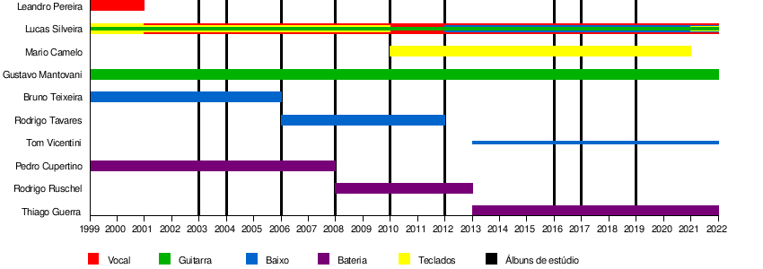

Fresno é uma banda brasileira de rock formada em 1999 em Porto Alegre. A banda tem em sua formação inicial Leandro Pereira como vocalista,
que saiu do projeto e deu lugar ao cearense Lucas Silveira em 2001, (vocal, guitarra, baixo e teclado), pelo gaúcho Gustavo Mantovani (guitarra)
e pelo pernambucano Thiago Guerra (bateria).
Atualmente, os integrantes da banda estão radicados em São Paulo. Em 2006, para substituir o baixista Lezo, Rodrigo Tavares foi convidado a e
ntrar na banda. Em 2008, o baterista Rodrigo Ruschel, também conhecido como "Bell", substituiu Cuper. Em 2012, o tecladista Mario Camelo, que está
com a banda desde 2010 foi efetivado na Fresno. A banda foi um quinteto por pouco tempo, pois dias depois o baixista Rodrigo Tavares saiu para dar total
atenção a seu projeto solo, Esteban; e também, para ser guitarrista de Humberto Gessinger. A banda optou por não substituir o antigo baixista. Em
agosto de 2013, a banda anunciou a troca do baterista Bell Ruschel por Thiago Guerra. Em 2021, Mario Camelo, tecladista da banda saiu da banda para seguir
um novo rumo.
As composições da banda tratam basicamente de desilusões amorosas e sentimentos em sua fase inicial, tendo com o álbum Redenção algumas músicas voltadas
para o pop. A partir de 2010, a banda começou uma nova fase. Com o lançamento do álbum Revanche e posteriormente o EP Cemitério das Boas Intenções a banda
começa a ter gêneros como o hard rock e rock industrial como principais influências. Ocorre também as mudanças nos temas de suas músicas, falando mais sobre
superações, realizações e assuntos sociais ao todo.
Amigos de colégio, Lucas (guitarra e teclado), Gustavo (guitarra), Pedro (bateria) e Leandro (vocal) tiveram a ideia de montar uma banda em novembro de 1999,
após uma animada reunião do Grêmio Estudantil, do qual os quatro faziam parte. A proposta inicial seria fazer versões punk de músicas consagradas, por pura
diversão. No dia 4 de dezembro de 1999, houve na casa do Pedro o primeiro ensaio, e essa é tida como a data oficial da formação da banda.
Eles ensaiaram despretensiosamente por alguns meses, rapidamente deixando de lado a proposta inicial para tocar covers de sucessos da época. Em maio de 2000,
convidaram Bruno, que também estudava junto, para ensaiar com a banda tocando baixo, só para que eles pudessem se apresentar no festival de bandas da escola,
no mês seguinte. Foi nesse festival, no dia 16 de junho de 2000, que aconteceu o primeiro show da banda, com um repertório composto inteiramente de covers -
quase todas de pop rock nacional. Depois do show, Bruno acabou decidindo permanecer na banda. A esta altura eles se chamavam Democratas, e começavam a surgir
suas primeiras composições próprias, influenciadas principalmente pelo hardcore californiano. Essas canções se espalharam pela Internet em versões acústicas e
logo começaram a chamar atenção.
Linha temporal das atividades dos integrantes

Redenção, Revanche e sucesso nacional
Para o álbum Redenção a Fresno abraçou o pop, deixando um pouco de lado o hardcore. O álbum foi lançado em 15 de Abril de 2008, e já conquistou um Disco de Ouro,
entregue pessoalmente por seu empresário Rick Bonadio ao vivo em um show no Espaço das Américas em 14 de Dezembro de 2008.
Ainda em 2008, a Fresno participou do programa Estúdio Coca-Cola com Chitãozinho e Xororó. Ambos ainda se apresentaram no Show da Virada, da Rede Globo, exibido no dia 31 de Dezembro.
Em 2009 a banda continuou em ascensão conquistando importantes prêmios em nível nacional como: Artista do Ano no Prêmio Multishow, Melhor Banda Pop e Artista do Ano no Video Music
Brasil (VMB) da MTV. Além disso, houve também coroações individuais no Video Music Brasil para Lucas, como melhor vocalista e para Tavares, como melhor baixista.
Em maio de 2010 a banda lançou um novo disco chamado Revanche. Com um som já bem mais pesado que o antigo álbum, com faixas com grandes distorções nas guitarras como "Revanche" ,
"Die Lüge", "A Minha História Não Acaba Aqui" e "Relato de Um Homem de Bom Coração" com letras já mais maduras. E também lançaram a música "Porto Alegre" falando da saudade que
sentiam de sua terra natal. O álbum tem sido considerado por muitos como o melhor entre todos os já lançados pela banda.
Em julho de 2010 a banda foi convidada a participar do CD e DVD de comemoração dos 30 anos de uma das bandas mais clássicas da MPB, o Roupa Nova. Fãs assumidos do sexteto carioca
o Fresno entrou no palco ao lado de Serginho Herval, Paulinho, Ricardo Feghali, Kiko, Cleberson Horsth e Nando para tocar um grande hit do Roupa Nova, "Show de rock'n roll", que
está presente no álbum Roupa Nova 30 anos. Já em 2011, gravaram o clipe musical de "Eu Sei" e de "Porto Alegre", falando dos antigos lugares de shows, familiares e lugares que já passaram.
Sua Alegria Foi Cancelada
Em 5 de julho de 2019 foi lançado o álbum Sua Alegria Foi Cancelada, após uma forte campanha digital, apoiada por vazamentos estratégicos, gerando grande comoção na base de fãs da banda.
Com participação de Jade Baraldo e Tuyo, o álbum é o primeiro da banda pelo recém-inaugurado selo BMG.
Em 2020, devido à pandemia do covid-19, a banda cancelou seus shows agendados e planejou uma live no YouTube chamada de QuarentEMO. Na noite do dia 17 de abril, Lucas Silveira fez
4 horas de live, tocando sucessos da Fresno e musicas de outros grupos como NX Zero, CPM 22, Chitãozinho & Xororó, entre outros. A live arrecadou mais de 8 mil cestas básicas para serem
doadas para instituições de caridade, e também contou com participações de Glenn Greenwald e Tavares, ex-baixista da banda. A live ficou em #1 em alta no YouTube, teve um auge de mais de 100 mil pessoas simultâneas e vários famosos acompanharam a live, por exemplo a cantora Anitta.
Em 24 de agosto de 2021, a banda anunciou a saída do tecladista Mario Camelo por meio de suas páginas no Facebook e Instagram.
Vou Ter Que Me Virar
“Rock, direto, livre e com muita vontade", assim define Thiago Guerra sobre o que podemos esperar de Vou Ter Que Me Virar, nono disco de estúdio da Fresno – também formada por Lucas Silveira e Gustavo Mantovani. Após uma jornada de lançamentos que deu forma à playlist INVentário, o álbum chega 5 de novembro de 2022, às plataformas de streaming (ouça aqui). O videoclipe da faixa-título estará disponível no canal da banda no dia 8 de novembro.
Escolhida para nomear o trabalho, “Vou Ter Que Me Virar" abre o álbum refletindo o seu próprio conceito, em uma sonoridade bem dançante. “Não tinha como ser outra, é a gente se virando nesse mundo e continuando a nossa carreira depois de mais vinte anos de banda", explica Lucas Silveira. Usando de um artifício presente em INVentário, o final da primeira faixa já se conecta com a seguinte: “Fudeu!!!". Essa segunda carrega um tom mais punk-rock e partiu de um sample de bateria eletrônica enviado pelo produtor musical Arthur Joly. “Ela dá uma rompida muito grande já no início do disco, porque o cara acha que vai escutar um disco triste e ouve essa ‘cavalice’", conta Silveira. Na sequência, “Casa Assombrada" é fruto de reflexões do vocalista após começar a fazer terapia e analisar alguns pontos sobre a vida.
A primeira participação a aparecer no trabalho marca também o debute da banda com Lulu Santos. Intitulada “Já Faz Tanto Tempo", a faixa foi gravada há dois anos e é uma daquelas composições que ficaram esperando o melhor momento para serem lançadas. “Desde quando o Lulu topou estar nela, já sabíamos que ia ser um negócio especial. É uma música muito forte, então a gente não poderia lançar de qualquer jeito", explica Lucas, que completa: “Esse som resgata muito a Fresno antiga, lá de 2006 a 2008, mas também carrega muito do Lulu, porque é uma faixa romântica".
Entre as onze canções da tracklist, três já tinham chegado aos fãs por meio de INVentário, que abriu caminho para Vou Ter Que Me Virar. “A mixtape veio com o intuito de fazer uma campanha musical do próprio disco e preparar o terreno", comenta Guerra. A primeira a aparecer na tracklist do álbum foi “Eles Odeiam Gente Como Nós", seguida por “Agora Deixa" e “6h34 (Nem Liga Guria)".
A nova era da Fresno apresenta também uma identidade visual renovada, com revisões na logomarca, na fonte e na cor que representa essa fase. Para chegar ao resultado final, o trio optou pelo processo fotográfico conhecido como cianotipia, feito com compostos químicos expostos à luz solar, resultando em um efeito azulado nas imagens. “A cianotipia é um negócio 200% analógico e a nossa música é muito isso, gravamos de maneira digital no computador, mas no fim utilizamos diversas coisas pra devolver essa ‘sujeira’ pra ela", define Lucas.
Sucessor do álbum Sua Alegria Foi Cancelada (2019), que foi responsável por ressignificar a Fresno e levar a banda para novos lugares, Vou Ter Que Me Virar carrega no título (e em seu conteúdo) a realidade do contexto atual da sociedade, cheio de “vou ter que…". Inevitável mergulhar nos momentos melancólicos, porém ele encontra as frestas necessárias para chegar aos fãs como o trabalho mais esperançoso da discografia do grupo. “Até ficar pronto, Vou Ter Que Me Virar teve 42 versões. A que estamos lançando é a mais próxima dos nossos corações", conclui Lucas.